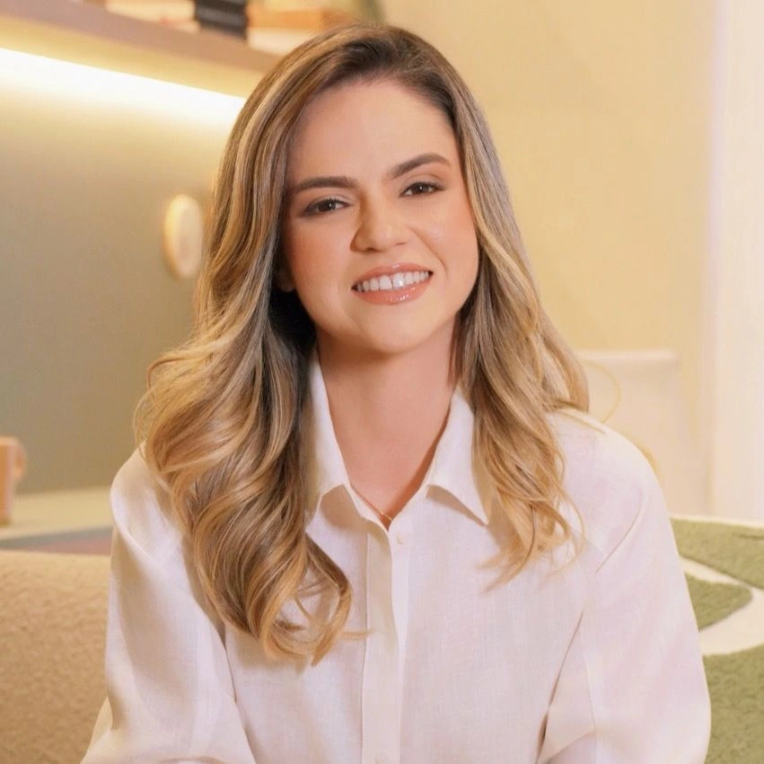

Adolescentes
Psicanálise voltada às particularidades, às mudanças e às relações vividas na adolescência.
PSICOTERAPIA · ARACAJU E ONLINE
Psicoterapia para adolescentes e adultos, com uma escuta que considera sua história, suas emoções e o seu modo de estar no mundo.

CUIDADO COM A SAÚDE EMOCIONAL
A psicoterapia é um espaço de escuta, sem julgamentos, em que você pode falar sobre suas dificuldades e conhecer melhor a sua própria história, com respeito ao sigilo profissional.

A ABORDAGEM PSICANALÍTICA
A psicanálise permite explorar aspectos inconscientes da própria história, compreender dificuldades e buscar formas mais saudáveis de lidar com elas. O trabalho tem como horizonte o autoconhecimento, a autonomia e a saúde integral.
CONHEÇA A PROFISSIONAL
Sou psicóloga formada pela Faculdade Pio Décimo, em Sergipe, em 2015. Desde a minha formação, atuo na clínica com ênfase na teoria psicanalítica, atendendo adolescentes e adultos.
Meu trabalho é pautado pela escuta, pelo respeito às singularidades e pela ética profissional, em um espaço livre de julgamentos.
EXPERIÊNCIA CLÍNICA
FORMAS DE ATENDIMENTO
Psicanálise voltada às particularidades, às mudanças e às relações vividas na adolescência.
Escuta de questões pessoais, dificuldades nos relacionamentos e aspectos da própria história.
Consultas particulares em Aracaju ou por videochamada. Entre em contato para alinhar a modalidade e os horários.


O CONSULTÓRIO
O atendimento presencial acontece no Horizonte Jardins Offices, em Aracaju.
ANTES DE COMEÇAR
Algumas informações para ajudar você a conhecer o funcionamento das consultas.
É um momento inicial para conversar sobre o que motivou a busca por psicoterapia, conhecer a proposta de acompanhamento e esclarecer dúvidas.
As sessões duram cerca de 50 minutos. Os encontros acontecem uma vez por semana, em dia e horário fixos, reservados para você.
O atendimento é particular. Para saber valores e disponibilidade, entre em contato pelo WhatsApp.
Sim. Há consultas por videochamada. Confirme a disponibilidade e os detalhes para o seu caso no agendamento.
O sigilo profissional é parte fundamental da prática psicológica, observadas as normas éticas e legais aplicáveis.
VAMOS CONVERSAR?
Entre em contato para conhecer os horários disponíveis e esclarecer dúvidas sobre o atendimento.
(79) 99972-0504